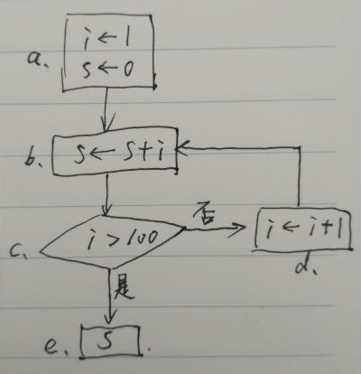
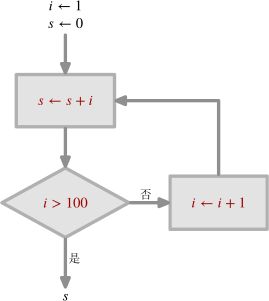
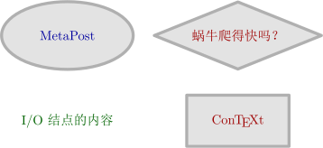
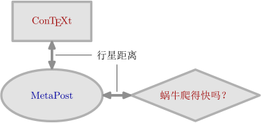
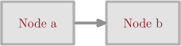
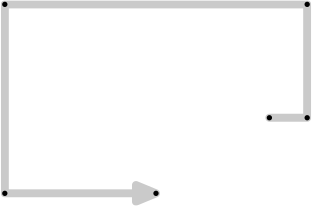
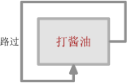
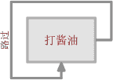

蜗牛
最近用 MetaFun [1] 制作了一个小模块 snail.mp [2] ，用于绘制矢量图格式的简单流程图。
此事纯属无心之举。原本是要用 awk 写一个能够自动编排文档中的参考文献和注释的工具。在酝酿情绪的过程中，打算用 MetaFun 画一幅简单的示意图。在绘图过程中，因不断嫌弃所用代码的繁琐，最终有了十余行简短的绘图代码以及能够让这些代码工作的一个小模块。

我将这个模块命名为 Snail（蜗牛）。之所以如此命名，一方面是因为以语言描述的方式绘制流程图，效率太低了；另一方面，绘图过程也的确像蜗牛的爬动。
简单的例子
为求和运算 1 + 2 + 3 + ... + 100 绘制流程图，以此建立对 Snail 的喜欢、讨厌或者不以为然的初步印象。
首先应该用铅笔在纸上绘制草图。不过，我没找到铅笔，好不容易找到了一支中性笔客串一番。

基于以上草图，用 Snail 绘制流程图，结果为

所用的绘图代码为
\usemodule[zhfonts] \defineframed [SnailBox] [frame=off, width=6cm, autowidth=force, align={middle, lohi, broad}, offset=overlay] \startMPpage input snail; Node a, b, c, d, e; a := io("\SnailBox{$i\leftarrow 1$\\$s\leftarrow 0$}"); b := proc("$s\leftarrow s + i$"); c := other("$i > 100$", diamond(b)); d := proc("$i\leftarrow i + 1$"); e := io("\SnailBox{$s$}"); as_planet(b, a, "bottom"); as_planet(c, b, "bottom"); as_planet(d, c, "right"); as_star(e, c, "bottom"); draw_each a, b, c, d, e; enrich_each a, b, d, e; flow_each a => b, b => c, walk(d.N, (_n_ _v_(d.N, b.E)), b.E); tagged_flow("是", "right", .4) c => e; tagged_flow("否", "top", .4) c => d; \stopMPpage
绘图环境
使用 Snail 模块绘制流程图，需要将绘图代码嵌入 ConTeXt 文档：
% 导言区：对 ConTeXt 排版功能予以全局设定 % % \startMPpage input snail; % 用于绘制流程图的代码 % % \stopMPpage
若基于 zhfonts 模块 [3] 实现中文支持，只需在导言区添加 \usemodule[zhfonts]，即
\usemodule[zhfonts] \startMPpage input snail; % 用于绘制流程图的代码 % % \stopMPpage
若将上一节给出的绘图代码保存为 foo.tex 文件，使用 context 命令便可将其编译为图形文件 foo.pdf，
$ context foo.tex
context 命令隐含了许多细节。在 ConTeXt MkIV 环境里，这个命令会将 foo.tex 文档交由 TeX 引擎 LuaTeX 处理，最后生成 PDF 格式文件 foo.pdf。foo.tex 所包含的 MetaPost 代码由嵌入在 LuaTeX 中的 MPLIB 转化为 PDF 格式的图形文件，然后再由 LuaTeX 将图形文件嵌入 foo.pdf。这一过程，使用 Snail 可将其描绘为

结点
一幅流程图由结点、结点间的连线以及连线上的标注等元素构成。在 Snail 看来，结点只有两类，一类是 I/O（输入/输出）结点，另一类是过程（Procedure）结点。在 Snail 的默认绘图设定中，I/O 结点是无边框的文本，而过程结点是有边框的文本。
Snail 模块的 io 宏用于构造 I/O 结点，只需将 I/O 结点的内容以字串的形式作为参数传给 io 宏，例如
Node a;
a := io("I/O 结点的内容");

I/O 结点的文本颜色默认为黑色，若让它呈彩色，例如深绿色，只需
Node a;
a := io("I/O 结点的内容") withcolor darkgreen;

proc 宏用于构造过程结点。它会根据过程结点的文本自适应确定一个矩形边框，文本到边框的距离（留白）默认是 12 bp，约为 4.233 mm。例如，
Node d; d := proc("\CONTEXT");

proc 也能像 io 宏那样通过 withcoloor 语句修改结点文本的颜色。
人只是人，人际关系却多变。数据只是数据，过程亦却多变。对于流程图而言，过程的多变对应的不过是过程结点的形状和颜色的变化而已。以矩形为边框的过程结点可用于表示一般的过程。其他形式的过程，其结点可通过 other 宏构造，例如
Node b, c, d; string d.txt;
b := other("\CONTEXT", fullsquare xysized (3cm, 1.5cm));
c := other("\METAPOST", ellipse(like b)) withcolor darkblue;
d.txt := "蜗牛爬得快吗？"; d := proc(d.txt);
d := other(d.txt, diamond(like d));

b 的边框是长 3 cm、宽 1.5 cm 的矩形。c 的边框是椭圆。在默认情况下，c 边框的长轴与短轴的尺寸分别是 b 的边框长度和宽度的 1.25 倍。like 是 Snail 的宏，其作用是根据基于给定图形的最小包围盒确定一个矩形，因而 eillpse(like b) 的含义是基于像 b 的包围盒那样的矩形构造椭圆。同理，diamond(like d) 的含义是基于像 d 的包围盒那样的矩形构造菱形，只不过在上述代码中，先构造了普通的过程结点 d，然后基于它的边框构造菱形，再将新构造的结点赋予 d 这个变量，从而实现了 d 由普通过程结点向菱形过程结点的「进化」。注意，上述代码也展现了 other 宏可以像 io 和 proc 那样以 withcolor 语句设置结点文本的颜色。
无论是 I/O 结点还是过程结点，其类型皆为 Node，该类型是 Snail 为 MetaPost 的 picture 类型而取的「别名」。因此，I/O 结点与过程结点可直接用 MetaPost 的 draw 命令绘制出来，例如：
draw a; draw b; draw c; draw d;
Snail 的 draw_each 可将一组结点绘制出来，利用这个宏可避免重复输入 draw 命令，
draw_each a, b, c, d;
上述两条绘图语句等价。不过，Snail 所构造的结点，皆以坐标原点为中心，因此上述两条语句绘制的结果是一组堆叠起来图形：
因此，结点的绘制必须在流程图中的具体位置确定之后方可进行。
恒星与行星
可直接使用 MetaPost 的平移变换命令 shifted 对结点进行定位。例如，对于上一节定义的四个结点，采用以下语句进行绘制：
draw_each a, b shifted (5cm, 0), c shifted (0, 2.5cm), d shifted (5cm, 2.5cm);
结果为：

采用平移变换命令对结点进行定位，可将任一结点放在图中的任一位置，这样做虽然自由，但是随着结点的增多，这个工作便会变得非常乏味。在绘制流程图的过程中，一个结点的位置通常是以它相对于另一个结点的位置而确定，而且二者的间距通常应当是定值。
Snail 是个心怀宇宙的 MetaFun 模块，它绝对不会满足于牛顿式的绝对空间。如果真的存在绝对的空间，那么谁能告诉我太阳中心的三维坐标呢？倘若以上帝的视角去安排流程图中各个结点的绝对位置或者各个结点的绝对间距，只要用心，也是能够绘制出非常美观的流程图，然而这样的流程图没有生命，对结点的形状与位置略作一些修改，图的结构便会被破坏。上帝断然不会创造没有生命的物体，否则他就太蠢了，不值得供奉或敬仰。
在 Snail 看来，结点的相对位置分为两类，恒星定位和行星定位。这两种定位决定了流程图结点分布的舒密。
恒星定位是以结点中心之间的水平或竖直距离作为约束，基于一个结点的位置确定另一个结点的位置，这种定位可通过 Snail 宏 as_star 实现。例如，将结点 b 放在 a 的右侧，让二者中心的水平距离为默认的行星距离：
as_star(b, a, "right");
类似地，可以用 left、top 以及 bottom，将 b 放在 a 的左侧、顶部以及底部。Snail 默认的行星距离是 5 cm，这个值存储于 Snail 的一个全局变量 _star.s，这意味着可通过修改这个变量控制流程图中以恒星定位的结点间距。还有一部分类似于 _star.s 这样控制流程图整体样式的全局变量，在本文的最后会专门予以介绍。
行星定位类似于恒星定位，唯一的区别前者在对一个结点进行定位时是以结点边框的间距——行星间距作为约束。所谓结点边框的间距，即对于任意结点 a 和 b，当它们的中心连线为同一条水平或竖直的线段时，a 和 b 的边框与该线段交点的距离。Snail 的宏 as_planet 用于实现结点的行星定位，其用法与 as_star 同，例如
as_planet(b, a, "bottom"); as_planet(c, b, "bottom"); as_planet(d, c, "right");

组合
结点的恒星和行星定位还是太过于严格，以致一些特殊的结点定位需求难以满足，例如

结点 d 的宽度与 a、b 和 c 相同，高度则是从 c 的底端到 a 的顶端。为了满足诸如此类的定位需求，Snail 提供了 +++ 运算符，用它可以将任意两个结点绑定起来，从而获得一个新的结点，而且新的结点所占据的区域恰好包含这两个结点。重复使用 +++ 便可以实现多个结点的绑定。
对于形如上图所示的四个结点，可采用以下代码予以定位：
Node a, b, c, abc, d;
a := other("a", fullsquare xysized (2cm, 1cm));
b := other("b", like a);
c := other("c", like a);
as_planet(b, a, "bottom"); as_planet(c, b, "bottom");
abc := a +++ b +++ c;
d := other("d", like abc);
as_planet(d, abc, "right");
draw_each a, b, c, d;

水平 / 竖直对齐
若将一个结点的中心与另一个结点的中心在水平或竖直方向上对齐，可相应采用 Snail 的halign 或 valign 宏。例如，若将结点 a 的中心与结点 b 的中心在水平方向上对齐，即 b 的位置固定，调整 a 的位置，使得二者的中心在同一水平线上，只需
halign(a, b);
同理，
valign(a, b);
可将以调整 a 的位置，使得它的中心与 b 的中心在竖直方向对齐。
若以一个结点为基准，让一组结点的中心在水平或竖直方向上对齐，可以利用 MetaPost 的循环语句。例如，以 a 为基准，将 b、c、d 等结点的中心与 a 的中心在水平方向上对齐：
forsuffixes i = b, c, d: halign(i, a); endfor;
连接
当各个结点的摆放位置确定之后，考虑的便是它们之间的连接。基于恒星定位或行星定位的两个结点，若它们相邻，可直接连接。对于这种连接，Snail 提供了 => 运算符。=> 左侧的结点称为出射结点，右侧的结点称为入射结点。=> 会根据出射结点与入射结点的位置确定一条连线，该连线出射结点的边框上某条边的中点出发，沿水平或竖直方向抵达入射结点的边框。例如
Node a, b;
a := proc("Node a");
b := proc("Node b");
as_planet(b, a, "right");
draw_each a, b;
flow a => b;

Snail 的 flow 宏是 MetaFun 的 drawarrowpath 宏的替代，用于绘制有向路径。
再看一个例子：
Node a, b, c, abc, d;
a := other("a", fullsquare xysized (2cm, 1cm));
b := other("b", like a);
c := other("c", like a);
as_planet(b, a, "bottom");
as_planet(c, b, "bottom");
abc := a +++ b +++ c;
d := other("d", like abc);
as_planet(d, abc, "right");
draw_each a, b, c, d;
flow_each a => d, b => d, c => d;

flow_each 与 draw_each 类似，只不过它绘制的是一组有向路径。
当两个结点既不水平排列也不在竖直排列时，二者的连接是折线。能够像 => 那样自动确定连接路径是一件很美好的事。然而，Snail 决定不要这种美好。
对于弯曲的路径，Snail 会沿着我们小心谨慎地构造的路径，从出射结点爬到入射结点。该基于出射锚点、前进的方向、前行的距离以及入射锚点而确定。构造该路径的过程就是模拟蜗牛的爬行或人的行走。例如，从一个确定的地点，向东走 100 米，向北走 100 米，向西走 500 米，就这样转来转去，直至抵达目标地点为止。Snail 的 walk 宏可用于构造这种路径。
walk 的第一个参数是路径的起点，第二个参数是由行进方向和距离构造的路径，第三个参数是终点。起点和终点可由 Snail 的 anchor 宏在源结点和目标结点的边框上确定。
若结点的边框为矩形，anchor 宏具备在该边框上确定任意一点的能力。例如，对于结点 a，其左、右、上、下边框的中点，可由以下代码确定：
anchor(a, "left", 0); anchor(a, "right", 0); anchor(a, "top", 0); anchor(a, "bottom", 0);
anchor 前两个参数的作用已经很明显了，它的第三个参数是矩形边框上的参数坐标。对于矩形的每条边框，参数坐标的取值范围为 [-0.5, 0.5]，中点的参数坐标为 0。

现在 walk 宏的第二个参数描述的是路径的起点与终点之间的部分，但是只能由行进方向和距离构成。例如
path p; p := (0, 0) >>> right * 1cm >>> up * 3cm >>> left * 8cm >>> down * 5cm >>> right * 4cm;
表示从原点开始，向右走 1 cm，再向上走 3 cm，再向左走 8 cm，再向下走 6 cm，再向右走 6 cm。

>>> 是 Snail 实现的运算符，用于衔接各段行进方向及距离的「积」。由于模拟的是行走，以左右上下作为行进的方向不够自然，因而 Snail 定义了一组可以沿地理方向行进的宏：
-
_e_，_n_，_w_，_s_：向东、北、西、南行进； -
_E_，_N_，_W_，_S_：向东、北、西、南行进，但是事先会行进 0.5 倍的行星间距； -
_EE_，_NN_，_WW_，_SS_：向东、北、西、南行进，但是事先会行进 1 倍的行星间距。
基于这些宏，上述路径 p 可表示为：
p := (0, 0) >>> (_e_ 1cm) >>> (_n_ 3cm) >>> (_w_ 8cm) >>> (_s_ 5cm) >>> (_e_ 4cm);
当蜗牛很任性地绕着圈子爬行的时候，就可以走出一条漩涡路径：
numeric s; path p;
s := 0.25cm; p := (0, 0);
for i = 1 upto 7:
for j = "_n_", "_w_", "_s_", "_e_":
s := s + 0.25cm;
p := p >>> (scantokens(j) s);
endfor;
endfor;

现在，可以为结点构造折线形式的连接了。例如，对于一个结点，以其左边框的中点为起点，以其下边框的中点为终点，让路径自结点上方绕行，
Node a; pair a.out, a.in; path a.self, a.self.go; numeric a.w, a.h;
a := proc("打酱油");
a.out := anchor(a, "right", 0);
a.in := anchor(a, "bottom", 0);
a.w := _bw_ a; a.h := _bh_ a;
a.self.go := (_E_ 0) >>> (_N_ .5a.h) >>> (_WW_ a.w) >>> (_SS_ a.h) >>> (_E_ .5a.w);
a.self := walk(a.out, a.self.go, a.in);
draw a; flow a.self;

Snail 的宏 _bw_ 与 _bh_ 只是 MetaFun 宏 bbwidth 与 bbheight 的替代，分别用于获取结点的宽度与高度。宏 flow 是 MetaFun 宏 drawarrowpath 的替代，用于绘制带箭头的路径。
绘制这样一条简单的折线路径，需要这么多的代码，这就是 Snail 绘制流程图的效率瓶颈。所幸之处在于，对于简单的流程图而言，折线路径并不会太多。偶尔这样模拟一下蜗牛式的爬行，在诸多以恒星和行星方式定位的结点分布空间中以折线的方式行走，很像乘坐太空飞船作星际旅行。
倘若能够自动为结点构造一些常规锚点，例如每个结点边框上的中点，构造弯曲路径的代码便可以得到一些简化。Snail 的 enrich 宏可基于给定的结点构造 8 个位于边框上的锚点，它们皆为 pair 类型，以给定结点的变量名的后缀形式表示，分别位于这个结点的东（E）、东南（SE）、南（S）、西南（SW）、西（W）、西北（NW）、北（N）、东北（NE）位置。例如，
enrich(a);
结果可以得到一组 pair 类型的后缀形式的变量，即 a.E、a.SE、a.S、a.SW 等。此外，enrich 还可以获得结点边框的宽度和高度，例如 a.width 和 a.height。利用 enrich 宏，便可以对上述的折线路径的构造过程予以简化：
Node a; path a.self;
a := proc("打酱油");
enrich(a);
a.self := walk(a.E, ((_E_ 0) >>> (_N_ .5a.height)
>>> (_WW_ a.width) >>> (_SS_ a.height)
>>> (_E_ .5a.width)), a.S);
draw a;
flow a.self;
路径的标注
由于 MetaPost 支持以取值范围为 [0, 1] 的参数方式在一条路径上定位，因此利用这一特性，便可以对结点之间的连接进行标注。Snail 的 tagged_flow 宏实现了这一功能。对于上一节所构造的路径 a.self，若在参数为 0.65 的位置左侧增加文本标注，只需用 tagged_flow 取代 flow 宏，
tagged_flow("路过", "left", .65) a.self;

若需要对路径的标注文本进行旋转变换，使之与所标注位置的路径更为贴合，可利用 ConTeXt 的排版予以实现，MetaFun 的价值由此也得以体现。例如，
tagged_flow("\rotate[90]{路过}", "left", .65) a.self;

全局参数
Snail 预定义了一些全局变量，用于控制流程图的整体样式——文本颜色、边框颜色、边框背景以及留白等参数。
流程图各个元素的颜色默认为：
-
_io_color_ := black：I/O 结点的文本颜色，默认为黑色； -
_proc_color_ := darkred：过程结点的文本颜色，默认为暗红色； -
_flow_color_ := .9darkgray：结点连接线的颜色，默认为更暗一点的深灰色； -
_frame_color_ := .7white：过程结点的边框颜色，默认为浅灰色； -
_bg_color_ := .9white：过程结点的背景颜色，默认为更浅的灰色。
结点边框和结点连线的默认宽度为：
_pensize_ := 2.5;
结点连线的宽度和颜色默认设定为：
drawpathoptions(withpen pencircle scaled _pensize_ withcolor _flow_color_);
I/O 结点和过程结点文本四周留白尺寸默认为
_pad_ := 4; _proc_pad_ := 4_pad_;
恒星和行星定位时所用的水平和竖直间距默认为
_star.s := 4cm; _star.sx := _star.s; _star.sy := .5_star.sx; _planet.s := .2_star.s; _planet.sx := _planet.s; _planet.sy := _planet.sx;
_margin_ 用于 _E_、_EE_、_S_、_SS_ 等地理方向行进宏的预先行进的距离，默认值为 .5_planet.s。
_expansion_ 用于基于矩形构造与之外接的菱形和椭圆等图形时，后者的长轴与短轴在矩形的宽度与高度的基础上放大的倍数，默认值为 1.25。
引用的文献：
[1] MetaFun 列传
[2] Snail 模块：https://github.com/liyanrui/snail